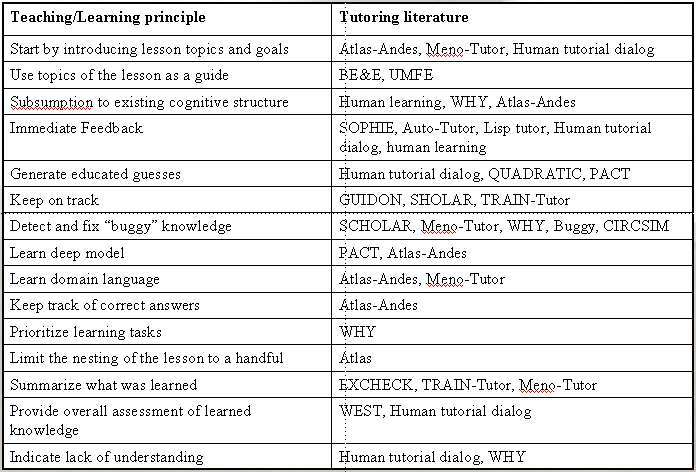
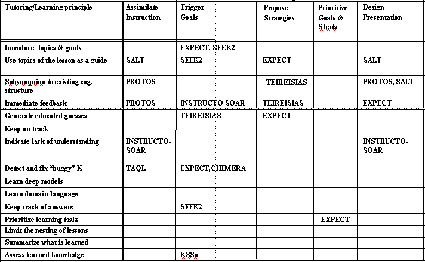

|
Main
Description
Status
Research
Publications
Demo
People
Funding
Links
|
Research
Current tools for interactive knowledge capture have little or no learning
aptitude. They are mostly oblivious to the process or strategy that the user
may be following in entering new knowledge, unaware of their progress during a
session, and ignorant of typical skills expected from a good student. A user
has to make up for these shortcomings by tracking the status, progress,
potential problems, and possible courses of action themselves. We present an
approach to make acquisition interfaces more proactive by extending them with:
1) goals that represent what remains to be learned, 2) strategies to achieve
these goals and acquire further knowledge, and 3) awareness of the current status
of the body of knowledge learned. The resulting interaction shows that the
system is aware of its progress towards acquiring the new knowledge, and moves
forward by understanding what acquisition goals and strategies to pursue.
- Analyzed the
literature on tutorial dialogues and compiled useful principles
that students and teachers typically follow in making tutoring/learning interactions
successful. The result of this work is presented in the ITS-2002 paper (in
proceedings of the Intelligent
Tutoring Systems Conference)

- Examined what tutoring and learning principles have been
used to date in the acquisition literature, though unintentionally and
implicitl and how a more thorough and explicit representation of
these principles would help improve enormously how computers learn from users. CogSci-2002 paper (in proceedings of the 24th Annual
Meeting of the Cognitive Science Society)

- Developed an
approach to make acquisition interfaces more proactive by extending them with:
1) goals that represent what remains to be learned, 2) strategies to achieve
these goals and acquire further knowledge, and 3) awareness of the current
status of the body of knowledge learned.
A prototype KA dialog system for acquiring military plans is described in slides
|